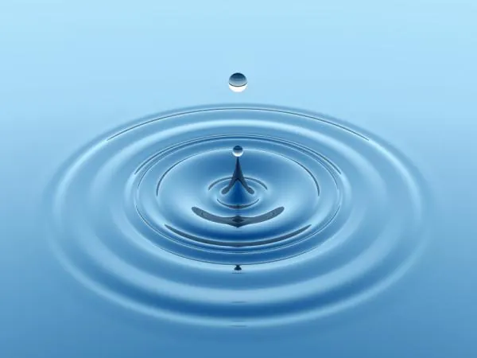

Смак і характеристики води після зворотного осмосу
Коротко: вода після зворотного осмосу зазвичай прозора, без запаху та без хлорного чи металевого присмаку. Смак у неї нейтральний, а завдяки малому вмісту солей вона здається м’якшою за водопровідну. Після мембрани воду нерідко мінералізують, щоб смак був звичнішим і рівним. Це питання органолептики та складу, а не лікувальних властивостей, тому порівнюйте воду за смаком і за даними на етикетці.
Який смак має вода після осмосу
Смак води складається з розчинених речовин, газів і температури. Зворотний осмос видаляє більшу частину розчинених солей і домішок, тому в напої не лишається того, що зазвичай дає присмак: хлору, іржі, органічних сполук. У результаті смак описують як чистий, нейтральний, іноді трохи прісний. Якщо ви звикли до води з вираженим мінеральним відтінком, перші ковтки можуть здатися незвичними.
Суб’єктивність тут велика. Одна людина вважає таку воду свіжою та легкою, інша знаходить її «порожньою». Найкращий спосіб визначитися — спробувати воду в невеликому обсязі й порівняти зі звичним варіантом: кип’яченою водопровідною чи фільтрованою.
Основні характеристики
- Низький вміст розчинених солей. Мембрана затримує більшу частину мінеральних речовин.
- Прозорість. Завись і каламуть видаляються на попередніх ступенях і мембрані.
- Відсутність стороннього запаху. Немає запаху хлору та затхлості, характерних для деяких джерел.
- Нейтральний смак. Ніщо не перебиває смак чаю чи кави.
- Можливість мінералізації. Після очищення воду можна довести до збалансованого складу.
Якщо говорити про значення, краще спиратися на дані виробника: склад і pH мають бути зазначені в документах і на упаковці. Точні цифри залежать від конкретного обладнання та джерела води, тому універсального «стандарту осмосу» не існує.
Чому вода відчувається м’якшою за звичайну
Жорсткість води визначають солі кальцію та магнію. У водопровідній воді вони присутні в помітних кількостях і впливають на смак: у такої води буває в’язкий післясмак, а на чайнику з часом з’являється наліт. Після осмосу вміст цих солей знижується, тому вода сприймається м’якшою й не залишає слідів на стінках посуду. Докладніше про те, як солі жорсткості впливають на побут, ми розповідали в матеріалі пом’якшення води.
Різницю особливо помітно під час приготування чаю та кави. Смак напою розкривається чистіше, оскільки у воді немає зайвих домішок, а на кавомашині та в чайнику наліт утворюється рідше.
Мінералізація після мембрани
Щоб пом’якшити «порожнечу» смаку, багато виробників мінералізують воду після осмосу. До неї додають невелику кількість мінеральних солей, і смак стає більш округлим. Склад і рівень мінералізації визначає сам виробник. Це не робить воду ліками та не замінює різноманітне харчування. Якщо у вас є особливі дієтичні потреби чи захворювання, питний режим краще узгодити з лікарем.
Як оцінити воду самостійно
- Налийте воду в чисту склянку й оцініть прозорість і запах.
- Спробуйте її кімнатної температури: холод приховує відтінки смаку.
- Порівняйте з водою з-під крана або з фільтра, налитою в таку саму склянку.
- Заваріть чай чи каву й оцініть, як змінився смак напою.
Вода Crystal Water
Ми постачаємо воду «Кришталево-чиста питна вода». Вона проходить 8 ступенів очищення, включно зі зворотним осмосом і озонуванням, а її pH близько 7,5. Принцип роботи методу описано в статті зворотний осмос: як працює очищення води, а про переваги й обмеження читайте в матеріалі зворотний осмос: плюси та мінуси. Увесь шлях води описано на сторінці технології очищення, а про компанію можна дізнатися в розділі про нас.
Пляшка об’ємом 19,9 л коштує 100 грн, застава за пляшку — 225 грн, помпа — 160 грн. Ми доставляємо воду в Броварах і Києві, мінімальне замовлення — 2 пляшки, а першу пляшку можна спробувати безкоштовно, щоб оцінити смак самостійно. Якщо хочете обрати воду для родини, прочитайте як вибрати питну воду для дому, а решта матеріалів зібрана в розділі статті.
Від чого ще залежить смак води
Окрім складу, смак визначають температура, посуд і умови зберігання. Надто холодна вода приховує відтінки, а тепла здається менш свіжою. Пластик, погано вимита склянка чи пляшка, що простояла на сонці, здатні передати воді сторонній післясмак. Тому зберігайте воду в чистій тарі в прохолодному темному місці й не залишайте відкриту пляшку надовго. Докладніше про це читайте в статті як зберігати пляшки з водою.
Звичка теж відіграє роль: якщо людина роками пила воду з високим вмістом солей, нейтральний смак може здаватися незвичним. Зазвичай на адаптацію потрібно кілька днів, а потім різниця перестає бути помітною.
Якщо ви обираєте воду вперше, не поспішайте з висновками після однієї склянки. Спробуйте її кілька днів у різному вигляді: холодною, кімнатної температури, в чаї та в супі. Так простіше зрозуміти, чи підходить вам нейтральний смак, і вирішити, який обсяг замовляти на постійній основі.
Часті запитання
Чому вода після осмосу буває безсмачною?
З неї видалено більшу частину солей і домішок, які зазвичай надають смаку. Мінералізація допомагає зробити смак звичнішим.
Чи можна використовувати таку воду для чаю та кави?
Так. Нейтральний смак дає напою розкритися, а чайник і кавомашина вкриваються нальотом помітно рідше.
Чи потрібно кип’ятити воду після осмосу?
Для пиття зазвичай не потрібно. Для дитячого харчування орієнтуйтеся на рекомендації виробника сумішей і педіатра.
Скільки коштує спробувати воду?
Першу пляшку можна спробувати безкоштовно, мінімальне замовлення — 2 пляшки. Пляшка коштує 100 грн, а застава за тару становить 225 грн.
Спробуйте воду з доставкою додому
Замовте воду Crystal Water у Броварах або Києві: перша пляшка для проби безкоштовно, мінімальне замовлення — 2 пляшки.
Переглянути ціни та замовити